Tips for Creating Your Own Weather Data
This section describes two ways of creating your own weather data. The first way is aimed at small amounts of weather data, can be performed manually, and is described in detail. It is a bit laborious though.
The second way is aimed at obtaining and processing bulk weather data, which is best done automatic. This approach is sketched in coarse strokes, as the source, quality and quantity of the data will determine the exact approach.
Cloning and Manually Modifying
Let us say, we want to use pseudo-random July weather for the Salisbury Plains UK area, with three different weather days being sufficient for pseudo-random weather. Which means we need to obtain and enter 3 x 24 consecutive hours + 23 hours is approximately 96 hours of weather data.
The best way to achieve this is to clone and modify existing weather data, as follows:
- Clone a weather station folder in the Flashpoint Campaigns folder, subfolder Modules\Common\Weather. Let us copy and paste the ‘00282__Bamberg__Bayern__West-Germany’ folder and rename the copied folder. ‘manual_July__Middle_Wallop_Hampshire__United-Kingdom’. The exact name does not really matter, but why not indicate that the data was manually created for July and that we will obtain it from the Middle Wallop airfield weather station.
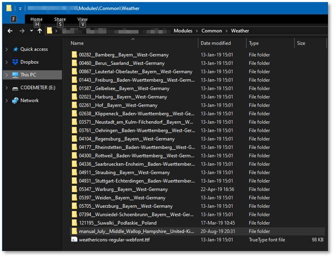
-
Next, enter the newly cloned folder and remove all but one of the data files. Rename the remaining one to ‘manual__Middle_Wallop__year__2018__hourly_interpretation.csv’
-
Open the renamed file with a spreadsheet tool (LibreOffice’s Calc or Microsoft’s Excel) and accept semi-colons as separator.
-
In the spreadsheet, it’s recommended to freeze the top 10 rows, so the header stays in view.
-
Scroll down to July 1st, hour 0, and clean rows for July 1st through July 4th except the date and hour columns
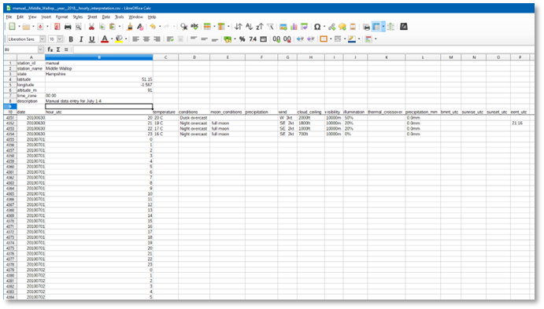
We need to obtain weather data to fill these empty cells. The web has plenty of weather sites offering historic weather data (but no sites offering all we need in one spot). We’re looking for Middle Wallop, July 2018 data.
Let’s browse to www.timeanddate.com, and search for Middle Wallop, bringing us to https://www.timeanddate.com/weather/@2642574. Here, we can ask for last weeks’ weather: https://www.timeanddate.com/weather/@2642574/historic. And select July 2018 as the month: https://www.timeanddate.com/weather/@2642574/historic?month=7&year=2018. Next, we click July 1 to get detailed weather:
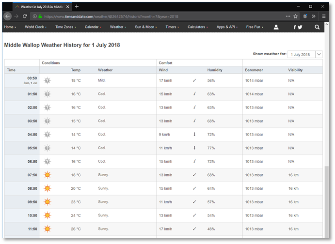
This web page gives us temperature, conditions, wind direction and wind speed, and visibility. Note that some of these fields require a bit of translation to match the required input as described in the table above.
Specifically,
- The conditions need to be translated to ‘night clear’, ‘day clear’, ‘day cloudy’ and ‘night cloudy’ for July 1 (we’ll sort out Dawn and Dusk later).
- The wind direction needs to be spelled out, after reading the arrow.
- N/A visibility needs to be translated to 99999m. * We need to guess the precipitation amount for those few moments it rains or sprinkles.
- We ignore dawn and dusk for the moment.
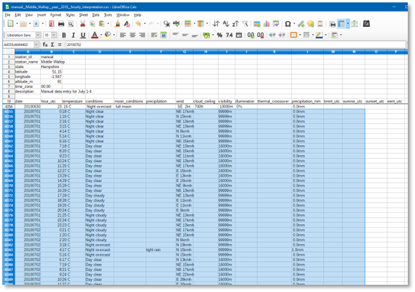
Next, on the same web site, we can find the dawn and dusk times. Click the ‘Sun & Moon’ drop down below the Middle Wallop banner, then select ‘Sunrise & Sunset’. It brings you to: https://www.timeanddate.com/sun/@2642574. In the lower part of the page, change the month and year to July 2018 (https://www.timeanddate.com/sun/@2642574?month=7&year=2018).
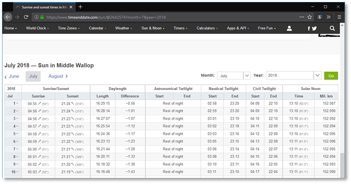
From the web site, we take the BMNT, Sunrise, Sunset and EENT for the first four days of July. We enter these in the corresponding column and hour rows. Next, we change the Day or Night designations in conditions to reflect Dawn or Dusk for the hours in which dawn or dusk starts or continues for the full hour.
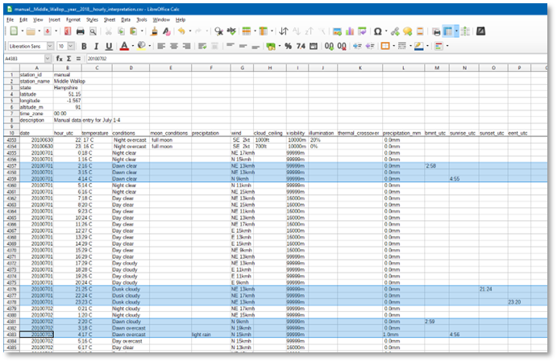
Again, from the same web site, we obtain moon timings and lunar phase. Click the ‘Moonrise and Moonset’ drop down below the Middle Wallop banner, then select the month July 2018 again: https://www.timeanddate.com/moon/@2642574?month=7&year=2018.
It tells us we have third quarter moon, rising after 23:00hrs or later, and setting between 08:00hrs and 10:00hrs for the first days of July 2018.
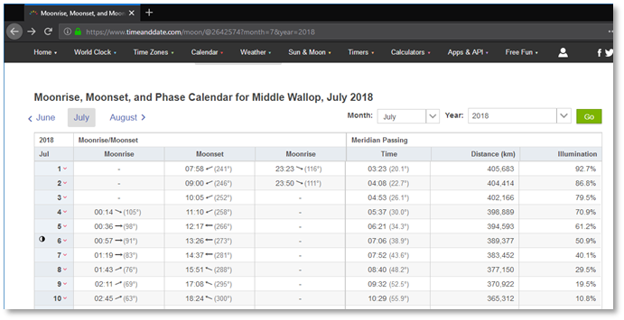
With this data, we can fill out the moon conditions column and complete the illumination column. We only report the moon during the night. Dawn and dusk have 50% illumination, and the 3q moon adds 30% illumination on clear nights, and 10% on overcast nights.
(Note that the web site indicates illumination data for the moon, whereas we are interested in world illumination in Middle Wallop. Do not copy the illumination data from the moonrise and moonset data on the web).
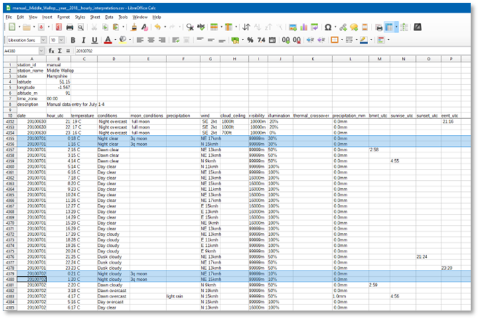
The final missing piece is cloud ceiling data (altitude of the base of the lowest cloud formation). Not all weather stations collect and report this, but most airfields do. With Middle Wallop also featuring an airfield (ICAO: EGVP), we can obtain cloud ceiling data as follows. On the web, go to Iowa State University’s collection of airports ASOS-AWOS-METAR Data: https://mesonet.agron.iastate.edu/request/download.phtml.
For Middle Wallop, UK, select the Great Britain ASOS network, and switch to that network: https://mesonet.agron.iastate.edu/request/download.phtml?network=GB__ASOS. Next, search for Wallop or EGVP, and select the EGVP Middle Wallop station. Finally, select the ‘Cloud Height Level 1 [ft]’ column, and set the date range to 2018 July 1 – 2018 July 5 (not July 4!), using the local UK (GMT/UTC time zone), and press ‘Get Data’.
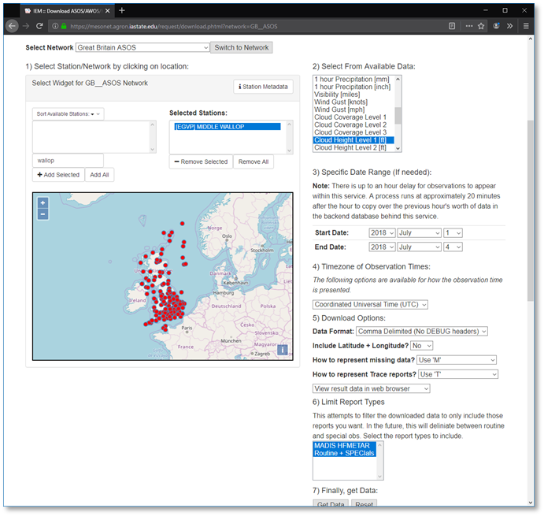
This will return a list of ‘skyl1’ observations in feet, with ‘M’ denoting ‘no clouds’ or missing data.
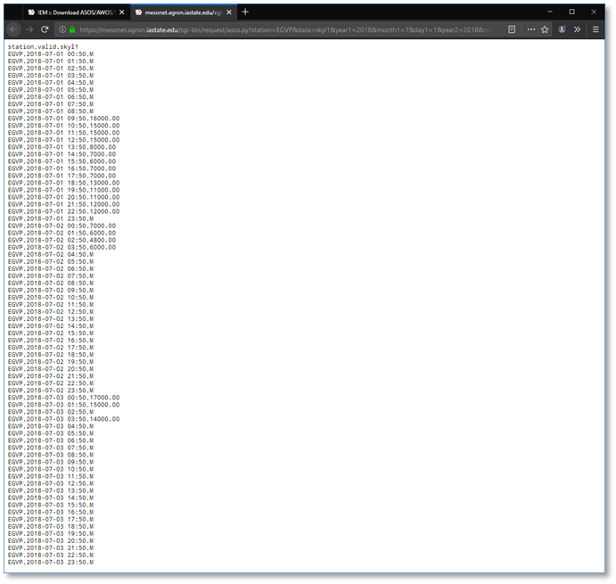
We can use this data to complete our weather data, leaving the column blank for ‘no clouds’, and entering the height in feet for those hours when clouds were observed, and our weather is cloudy or overcast. In the case that the web data is ‘M’ while our data is cloudy or overcast, interpolate, or extrapolate nearby cloud ceiling values.
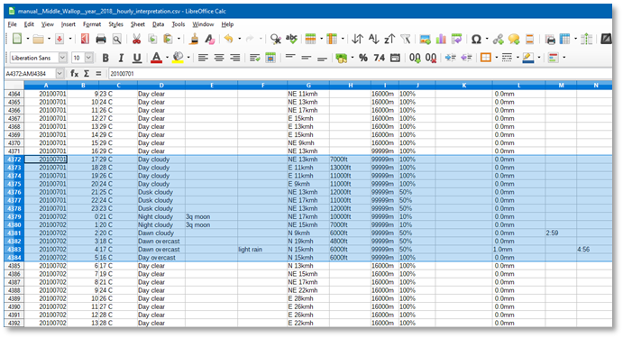
This completes our data entry. Save the file as .csv file.
It’s best to check the saved .csv text file with a text editor to see if the spreadsheet application wrote it with the right separator (a semi-colon), and with the header being separated from the bulk data by a blank line. If not, then try replacing tabs with semi-colons, and make sure there is a single blank line between the header lines and the bulk data.
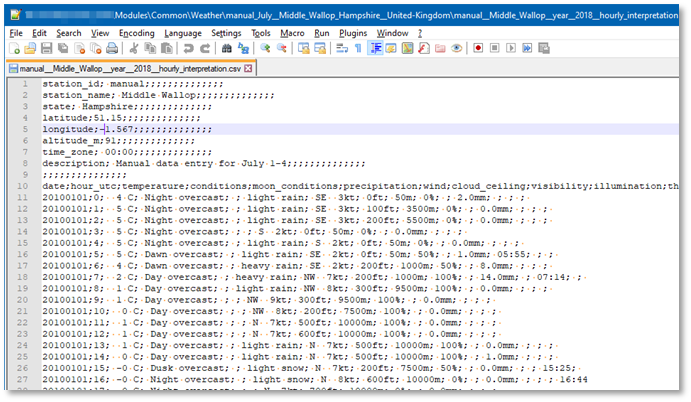
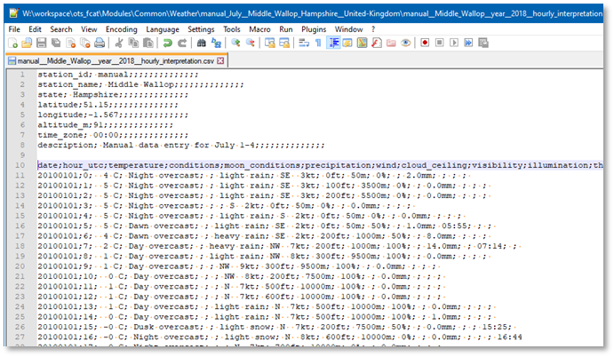
Now, it is finally time to load the data into our Scenario Editor… In the Scenario Editor, just change to the ‘Scenario Parameters’ screen, and press the ‘Weather Selection…’ button.
In Weather Selection dialog, use the ‘Select Weather Area’ Station dropdown list to scroll to and select manual_July_Middle-Wallop… Press the ‘Load Station Weather’ button. Under ‘Select Year(s) of Data’, select ‘All’.
Then, to use the 3 days + 23 hours we created for weather, select July (7) for month, and select 2 for day, with a 1-day range. Finally, press the ‘4. Select Weather Data’ button:
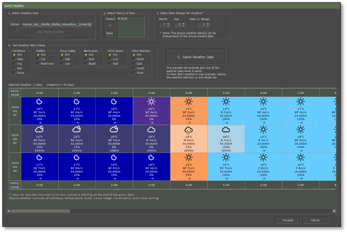
Press Proceed to use a pseudo-random selection from these 3 days of Salisbury Plains weather in your scenario.
Obtaining and Processing in Bulk
Although it is clearly possible to create weather data files by hand, this is slow and tedious. With some programming and data processing skills, it is also feasible to automate the generation of weather data by processing weather observations in bulk. This is fast, but still tedious, mostly due to absent information and missing observations.
This section describes hints and tips on how we would approach this based on what we learned and discovered during our ‘journey’ to create weather data files for Flashpoint Campaigns.
Data Source
For historic hourly weather observation bulk data across the world, we recommend the (free and public) US NOAA (National Oceanic and Atmospheric Administration) collection of data.
Given a lat/long coordinate pair for the map area of interest, first check the text file ftp://ftp.ncdc.noaa.gov/pub/data/noaa/isd-history.txt for a nearby listed station with recent observations. For example,
-
For the Salisbury Plains, Middle Wallop is listed (as station with ISD identifier 037490): 037490 99999 MIDDLE WALLOP UK EGVP +51.150 -001.567 +0091.0 19730809 20190125
-
For NTC Ft Irwin, California, Bicycle Lake AAF is listed (as station with ISD identifier 746110): 746110 03182 BICYCLE LAKE FORT IRWIN AAF US CA KBYS +35.283 -116.633 +0075.6 20050814 20190126
The ISD identifier then is the key to ftp folders of NOAA data by year. For 037490 Middle Wallop, the 2018 data is in:
- ftp://ftp.ncdc.noaa.gov/pub/data/noaa/2018/037490-99999-2018.gz
For 746110 Bicycle Lake AAF, the 2010 data is in:
- ftp://ftp.ncdc.noaa.gov/pub/data/noaa/2010/746110-99999-2010.gz
The .gz files are compressed text files containing ISD format records, ordered by observation time:
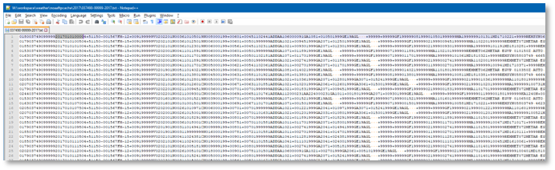
Each row is a record, with the first part in a mandatory fixed format, and optional information appended (including METAR info). The ISD format is documented in the ‘ish-format-document.pdf’, available here: https://www1.ncdc.noaa.gov/pub/data/ish/ish-format-document.pdf (2015 doc).
The mandatory fixed format provides wind, cloud base, visibility, and temperature information. The optional information (‘GA’) provides cloudiness information, and, as part of METAR records, precipitation, and fog information, although not always with precipitation amount values.
To complete this information, algorithms can provide the dawn and dusk timings, the lunar phase, and the moonrise and moonset timing for a given day, latlong position and time zone. Especially for the moonrise and moonset timings, it is nontrivial to find algorithms.
Next, augment the data with computed values (illumination, and estimates precipitation amounts given the METAR precipitation coding).
Finally, the data needs some repairing, by chronologically going through the hourly measurements and extrapolating values for missing observations.
Processing
If we were to solve this problem anew, with all these lessons learned, we’d probably pick the R language/environment to do the processing. The data frames convert easily to the .csv output our game requires. For R, there are public libraries available that read NOAA ISD data ( https://github.com/ropensci/isdparser ), and compute sun / moon timings ( https://github.com/datastorm-open/suncalc ).